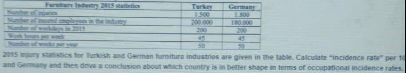
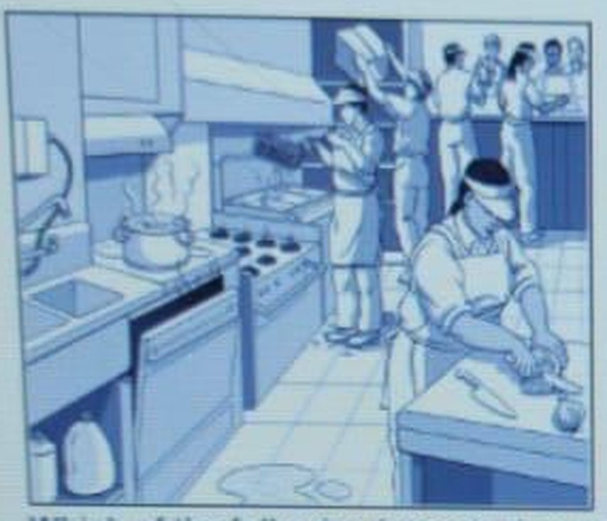
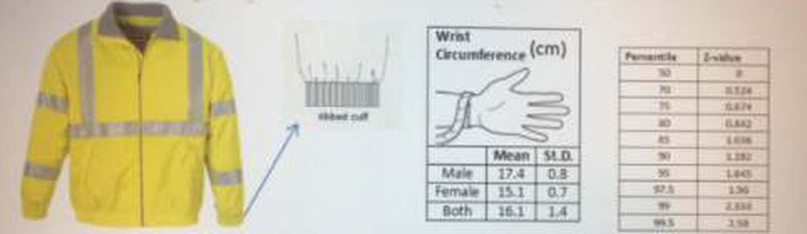
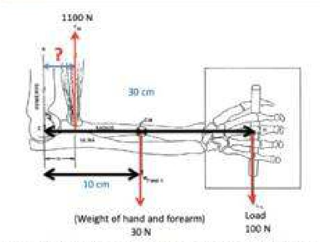

ES 411 OCCUPATIONAL HEALTH AND SAFETY I – ONLINE MIDTERM EXAM – November 2020 (ubs.ikc.edu.tr, examid=3065)
Bu sınavda sorular arasında gezinmeye, sınavın sorumlu hocası izin vermemektedir. Her soruyu sadece bir kere görebilirsiniz. Bu sebeple cevabınızdan emin olmadan soruyu geçmeyiniz. Sonradan değiştirme şansınız olmayacak.
Sorular öğrenciye göre farklı sırada ve seçenekler de farklı karışık sırada geliyordu. Sorular metne göre tekilleştirildi, konu akışına göre (mevzuat, eğitim/personel, istatistik, kaza/olay/risk, ergonomi ve antropometri) 1..26 numaralandı; şık sırası en net fotoğraftakine göre alındı. Ekrandaki numaralar ('22. Soru' gibi) öğrenciye özgüdür, kullanılmadı.
Tekilleştirme sonucu 25 değil 26 farklı soru çıktı; sınav büyük olasılıkla soru havuzundan 25 soru çekiyordu.
El yazılı cevaplar 'isg vizew.pdf' içinde öğrencinin kendi numarası ve kendi şık sırasıyla yazılmış; cevap metnine eşlenerek buradaki şık harfine çevrildi.
'marked' alanı, ilgili şık sırasının net göründüğü bir kopyadan alındı; farklı öğrencilerin farklı işaretleri remark'larda belirtildi.
Soru 11 metni sağ kenarda kesik, Soru 22 şekli hiçbir fotoğrafta görünmüyor; Soru 25 şık değerleri kısmen okunamadı.
Bir şıkkı işaretlediğinizde doğru cevap görünür. Seçiminiz bu tarayıcıda saklanır.
0 / 26 cevaplandı
1. Which of the following has been assigned to prepare occupational health and safety legislation/laws and develop national policies in the field of occupational health and safety in Turkey?
Doğru cevap: C · Kâğıtta/ekranda işaretli cevap · El yazısı '1)D?' farklı şık sırasına göre İSGGM'yi gösteriyor.
2. Which of the following is a false statement about the objective of the Occupational Health and Safety Law (Law No. 6331)?
Doğru cevap: C · Kâğıtta/ekranda işaretli cevap · 6331 kamu ve özel tüm sektörlere uygulanır; C yanlış ifadedir.
3. Which of the following is not covered by the Occupational Health and Safety Law, Law No: 6331?
Doğru cevap: C · Öğrenci cevap listesine göre · Seçenek sırası öğrenciye göre değişiyor; el yazısı cevap ('22)B') Admirals in the navy şıkkına karşılık geliyor. TSK personeli kapsam dışı.
4. Based on the “Right to abstain from work” part in Law 6331, which of the following is a false statement?
Doğru cevap: B · Kâğıtta/ekranda işaretli cevap · Çalışmaktan kaçınma süresince ücret ve haklar saklıdır; B yanlış.
5. Let's say you are a worker in a factory and there is a life-threatening hazard in the factory. What should you do in the first place in that case?
Doğru cevap: B · Öğrenci cevap listesine göre · El yazısı '23)A' (çalışan temsilcisine bildirme); seçenek sırası farklı. Net fotoğrafta işaret yok.
6. If you have a farm how many hours at least should your employees receive occupational health and safety training in 6 years?
Doğru cevap: B · Kâğıtta/ekranda işaretli cevap · Tehlikeli sınıf: 2 yılda bir 12 saat, 6 yılda 3x12=36 saat. El yazısı anahtar da 36 saate işaret ediyor (seçenek sırası farklı).
7. At least how many occupational safety specialists (experts), occupational physicians (medical doctor), workers' representatives, and chief workers' representatives would you need if you had a private hospital with 6,000 employees?
Doğru cevap: E · Kâğıtta/ekranda işaretli cevap · El yazısı anahtar '14)A' (24 uzman, 8 hekim, 6 temsilci, 1 baş temsilci); seçenek sırası farklı.
8. Since you will graduate from the Faculty of Engineering soon, you may want to pursue a professional life in the field of occupational health and safety in Turkey. What do you need to become an occupational safety specialist (expert) who can work at a private university?
Doğru cevap: A · Öğrenci cevap listesine göre · El yazısı '4)C' (220 saat eğitim + C sınıfı sınavı); seçenek sırası farklı. Başka bir öğrencinin kopyasında B işaretli.
9. If you need statistical data about the number of injuries in the Turkish manufacturing industry in 2014, where do you find it?
Doğru cevap: E · Kâğıtta/ekranda işaretli cevap
10. How many occupational fatalities do you expect in 2019? Hint: Note that the number of employees was around 21 million
Doğru cevap: E · Kâğıtta/ekranda işaretli cevap · İpucu satırının sonu ekranda kesik; bir fotoğrafta '2017' okunuyor.
11. [Tablo: Furniture Industry 2015 statistics] 2015 injury statistics for Turkish and German furniture industries are given in the table. Calculate “incidence rate” per 10[okunamadı] and Germany and then drive a conclusion about which country is in better shape in terms of occupational incidence rates.
Furniture Industry 2015 statistics
Turkey
Germany
Number of injuries
1.500
1.800
Number of insured employees in the industry
200.000
180.000
Number of workdays in 2015
200
200
Work hours per week
45
45
Number of weeks per year
50
50

Doğru cevap: C · Kâğıtta/ekranda işaretli cevap · Soru metni sağ kenarda kesik. Hesap: Türkiye 1500/200000 = %0,75; Almanya 1800/180000 = %1,0; iş saati bazında da Türkiye daha iyi.
12. An employee climbs to an apple tree at his workplace's garden at lunchtime. If he falls out of the tree and breaks his leg, is this a work accident?
Doğru cevap: C · Kâğıtta/ekranda işaretli cevap · El yazısı '7)D' (Yes, work accident); seçenek sırası farklı. Bir kopyada öğrenci 'not at the workplace' işaretlemiş.
13. A call center operator works at his home for a bank's customer service. If he is tripped by a cable on the floor while is talking to a customer on the phone and breaks his arm, is this an incident?
Doğru cevap: A · Kâğıtta/ekranda işaretli cevap · El yazısı '6)??????' belirsiz. Kaza da bir olaydır (incident); E yanlış.
14. “Cigarette smokers are 12 times more likely to die of lung cancer than non-smokers.” Based on this statement, what is the hazard?
Doğru cevap: D · İşaretli cevapla çelişiyor, gözden geçirin · kâğıtta E işaretli · Olasılık (12 kat) risk kavramıdır; tehlike (zarar kaynağı/zararın kendisi) 'sigaraya bağlı akciğer kanseri'dir. Başka bir öğrenci de bu şıkkı işaretlemiş. Anahtar yok.
15. Which of the following does not change the degree of risk?
Doğru cevap: D · Kâğıtta/ekranda işaretli cevap · El yazısı '6)D' (Cost of medical expenses) ile uyumlu.
16. Which of the following is an example of a reactive safety activity?
Doğru cevap: D · Kâğıtta/ekranda işaretli cevap · El yazısı '2)A' (near-miss report); seçenek sırası farklı.
17. Considering the Systems Theory, which of the following is a false statement?
Doğru cevap: B · Öğrenci cevap listesine göre · El yazısı '21)B' (Human being is always the strongest asset); bu kopyada öğrenci C işaretlemiş.
18. Which of the following hazards do you see in the figure?

Doğru cevap: D · Kâğıtta/ekranda işaretli cevap · El yazısı '25)D' ile uyumlu. Soru metni şeklin altındadır.
19. Which phenomenon explains the situation that nobody does anything under an emergency condition?
Doğru cevap: B · Kâğıtta/ekranda işaretli cevap · El yazısı '1)B' ile uyumlu.
20. Which of the following is not a definition of ergonomics?
Doğru cevap: D · Kâğıtta/ekranda işaretli cevap · El yazısı '19)D' ile uyumlu.
21. What is the difference between ergonomics and safety?
Doğru cevap: C · Öğrenci cevap listesine göre · El yazısı '3)C'.
22. Is the electricity meter in the figure below an ergonomic design? If not, which ergonomics type does it violate?
Doğru cevap: E · Öğrenci cevap listesine göre · emin değiliz · Şekil hiçbir fotoğrafta görünmüyor, cevap çözülemedi. El yazısı '9)C?' (cognitive; belirsiz); bu kopyada öğrenci macro işaretlemiş.
23. Which design strategies should be employed for the leg clearance under a work table?
Doğru cevap: D · Kâğıtta/ekranda işaretli cevap · El yazısı '8)C' (adjustability) ve iki öğrenci kopyası da adjustability işaretli; ancak ergonomi kaynaklarında bacak boşluğu için genelde 'extremes' önerilir, bu yüzden güven orta.
24. To whom will you design an emergency valve in a factory so that a worker can easily turn off the water supply when there is an emergency? Hint: It should be noted that an emergency valve has a critical function.
Doğru cevap: B · Öğrenci cevap listesine göre · El yazısı '6)C' (1%ile female); seçenek sırası farklı. Kritik işlev -> uç değer.
25. Assume you will design a male safety work-jacket with ripped cuffs. Since ripped cuffs are made of elastic materials, they can comfortably fit people with different wrist sizes when they stretch. Calculate the minimum and maximum values of the cuff circumferences that fits 80% of the male population (equally ignore people with the smallest and largest wrist sizes). Please ignore any fudge factor if there is any.

Doğru cevap: C · Öğrenci cevap listesine göre · Hesap: orta %80 -> z=1,282; 17,4 ± 1,282x0,8 = 16,4 / 18,4 cm. Şık metinleri fotoğrafta bulanık. El yazısı '8)C' (farklı şık sırası). Tablolar görselde.
26. Based on the figure given, the load is 100 N, the weight of hand and forearm is 30 N, and the required force by the biceps muscle to lift the load is 1100 N. What is the lever arm distance from the elbow joint and the insertion point of the biceps muscle?

Doğru cevap: C · Kâğıtta/ekranda işaretli cevap · Moment dengesi: 1100·d = 30·10 + 100·30 = 3300 -> d = 3 cm. El yazısı '6)3 cm'. A ve E değerleri bulanık.